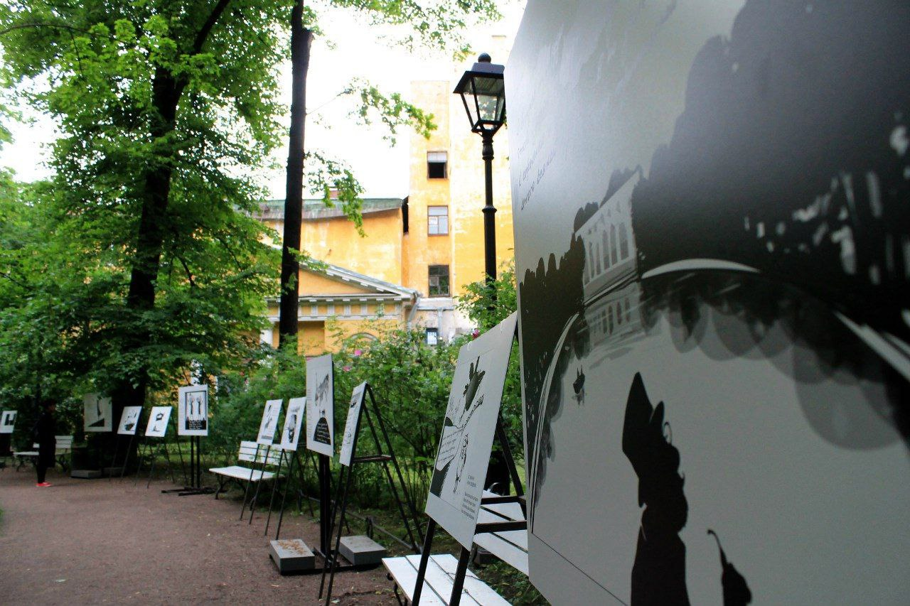

Проект «По стопам Ахматовой и Бродского» — это уникальная выставка, которая объединяет искусство поэзии и фотографии, создавая интерактивное пространство для глубокого погружения в мир творчества двух великих русских поэтов. Выставка проходит в живописном Шереметьевском саду, который сам по себе является историческим и культурным наследием, идеально подходящим для таких мероприятий.
Выставка представляет собой коллекцию оживших фотографий, на которых запечатлены места, связанные с жизнью и творчеством Анны Ахматовой и Иосифа Бродского. Каждое изображение сопровождается стихами поэтов, которые отражают их мысли, чувства и переживания, связанные с этими локациями. Посетители смогут увидеть, как природа и архитектура влияют на поэтическое восприятие мира, а также ощутить атмосферу времени, в котором жили и творили Ахматова и Бродский.
